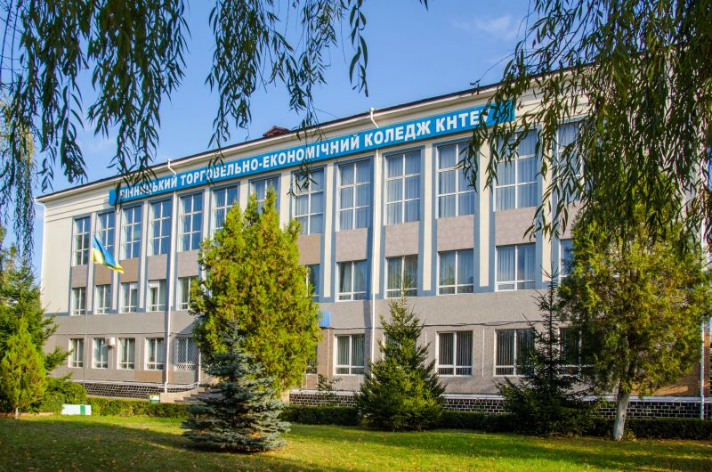

Відокремлений структурний підрозділ "Вінницький торговельно-економічний фаховий коледж КНТЕУ" є **престижним освітнім закладом** Поділля, який готує **кваліфікованих фахівців** для різних сфер економіки, національно свідомих громадян держави. Ми пропонуємо **сучасні освітні програми** та **практичні навички**, що відповідають вимогам ринку праці.
Наші студенти отримують всебічну підтримку та доступ до інноваційних навчальних ресурсів. ВТЕК КНТЕУ – це не просто коледж, це спільнота, де кожен знаходить своє місце та розвиває професійні компетенції. Ми пишаємося нашими випускниками, які успішно реалізують себе у різних галузях.
Історія успіху та традиції:
Вінницький торговельно-економічний фаховий коледж КНТЕУ має багату історію, що сягає корінням у минуле, формуючи міцні освітні традиції. Протягом десятиліть наш коледж був і залишається осередком знань та інновацій, виховуючи покоління успішних фахівців. Ми постійно адаптуємося до викликів часу, оновлюючи навчальні програми та методики, щоб забезпечити нашим студентам найактуальніші знання та навички. Це дозволяє нам підтримувати високий рівень якісної освіти та готувати випускників, які є конкурентоспроможними на сучасному ринку праці.
Сучасні освітні можливості:
Ми пропонуємо широкий спектр спеціальностей, що охоплюють ключові напрямки економіки та IT. Наші навчальні плани розроблені з урахуванням останніх тенденцій у галузі, забезпечуючи глибоке теоретичне розуміння та міцну практичну підготовку. Студенти ВТЕК КНТЕУ мають доступ до сучасних лабораторій, комп'ютерних класів та бібліотечних ресурсів. Ми активно впроваджуємо інтерактивні методи навчання, проєктну діяльність та співпрацю з провідними компаніями, що дозволяє нашим випускникам швидко адаптуватися до реальних умов роботи. Це робить навчання в нашому коледжі не лише ефективним, а й захопливим.
Студентське життя та перспективи:
Життя у Вінницькому торговельно-економічному фаховому коледжі – це не тільки навчання, а й насичене студентське життя. Активні студентські організації, спортивні секції, творчі гуртки та культурні заходи створюють сприятливу атмосферу для всебічного розвитку особистості. Ми віримо, що успішний фахівець – це гармонійна особистість, яка вміє не тільки працювати, а й ефективно взаємодіяти в колективі. Вінницький коледж пишається своїми випускниками, які стають лідерами у своїх галузях, демонструючи високий рівень професійних компетенцій та національну свідомість. Приєднуйтесь до нас і станьте частиною успішної спільноти **ВТЕК КНТЕУ**!
